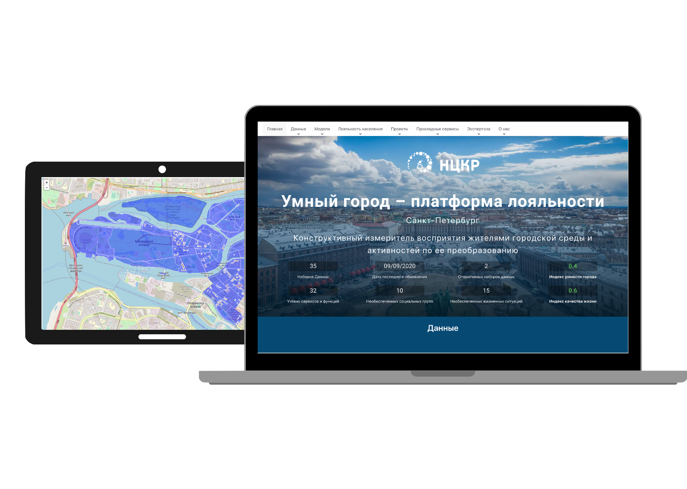

Informational/ Analytical platform
February 2020 - Present
February 2020 - Present

The National Center for Cognitive Development (NCCD), ITMO University, is the competency center of the National Technology Initiative (NTI) "Machine Learning Technologies and Cognitive Technologies"
The project, implemented at ITMO University, involves the creation of an informational/ analytical platform that provides relevant urban data and showcases while applying analytical methods.
The platform is designed to assess the loyalty, satisfaction and provision of citizens with living conditions in the city, the urban environment and activities to transform it.
The platform aims to determine the correspondence of real life conditions in the city to the needs, values and expectations of citizens throughout their lives and taking into account various life situations, to determine the urgent problems of the city and the functions and properties of the urban environment that are in demand.
A model of life in a smart city.
At the level of an individual citizen to take into account the values, motivations and needs of citizens from different socio-demographic groups in different life situations.
At the level of daily activity to account for differences in people's needs on different days of life.
At the level of changes in life conditions and socio-demographic groups
The model of the urban environment, called the pragmatic model, as it includes a description of the functions and services of urban infrastructures in terms of their physical condition, accessibility and quality.
The core of the urban environment model is the ontology of urban entities, which is necessary to account for the different and intersecting functional purposes of real urban objects.
Methods and models for preparing data to ensure the relevance of data for forensics. The platform uses two types of data:
Static urban data that forms a digital representation of the city and has a long period of obsolescence
(buildings, road network, green areas, water bodies, etc.).
Operational data reflecting the current situation or the state of objects in the urban environment.
Social groups include age social groups: the population is younger than the working age, the working population and older than the working age. Specific populations: pregnant women, pet owners, cyclists, car owners. Life situations: applying for state and municipal services, injury, childbirth, dating, illness.
Axios, canvasjs, d3, Data Visualization, Figma, Git, GitHub, LeafletJS, Matplotlib, Nivo Charts, Node, NumPy, Pandas, Python, ReactJS, Scikit-learn, SQL UI, Webpack
next project